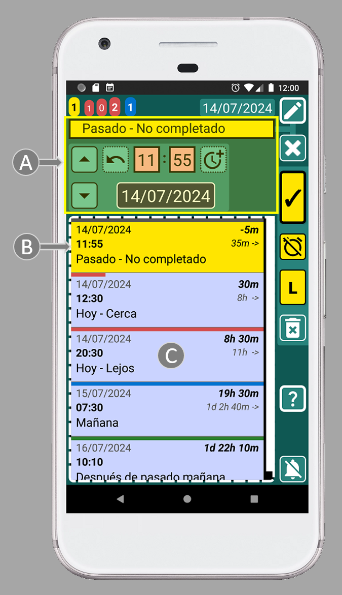

SECURElogBook está diseñado para ser muy fácil de usar, pero familiarizarse con algunos consejos clave te ayudará a desbloquear todo su potencial:
1. SECURElogBook divide el tiempo en minutos y te permite almacenar información en cada uno, ya sea en el pasado o en el futuro. En cada uno de esos minutos, puedes crear un registro, tarea, lista de compras o registrar un evento. Todo se almacenará en tu línea de tiempo, luego puedes usar el sistema de búsqueda para buscar o agrupar información y sacar conclusiones de ella.

2. Para gestionar la información, básicamente tenemos dos ventanas. Con SECURElogBook no necesitas borrar nada. Las alarmas, la ingesta de alimentos, los entrenamientos, las ideas, las listas de compras… un día, todo se convertirá en parte del pasado como registros en tu lista. Estos registros serán como nuestros recuerdos, pero puedes buscarlos o agruparlos para sacar conclusiones. La ventana principal (con fondo azul) te permite hacer eso.
A = Los contadores de tareas son como un radar que te permite determinar tu carga de trabajo en diferentes momentos.
B = La fecha en la ventana principal es un botón que te permite mover la lista al registro amarillo más cercano al presente. Si no hay registros amarillos, se moverá la lista al presente para mostrar el próximo registro entrante. Los registros amarillos son recordatorios o alarmas que ocurrieron, pero aún no has revisado.
C = Configuración. Acceso a: PIN de seguridad, ajustes de audio, formato de fecha, sistema de eliminación de registros, sistema de importación/exportación y ventana de información.
D = Ayuda. Documentación de ayuda para esta ventana.
E = Botón de bloqueo de la aplicación.
F = Lista de registros. Aquí puedes encontrar todos tus datos. Toca un registro para editarlo. Los resultados de búsqueda también se mostrarán aquí.
G = Botones para manejar registros: abrir el último registro guardado, buscar y agregar registros.
H = Botón para detener la alarma.
La página web principal tiene más información.
Luego tenemos ventanas para crear y editar información. Nuestra información/registro está compuesto por: texto (A), tiempo (B) e información sobre si está o no completado (C). Por eso hay controles para ayudarte a manejar el texto (A), fíjate que están conectados con una línea. Para ayudarte a gestionar el tiempo, hay un área con controles dedicados a eso (B). Finalmente, para manejar otras cosas relacionadas con el registro, tenemos los botones de registro (C):

A = Área de texto donde puedes abrir tu menú favorito para seleccionar en lugar de escribir. Puedes cambiar el menú de favoritos según tus necesidades para hacer las cosas aún más rápidas.
B = Área de controles de tiempo.
C = Botones de registro: guardar, completado/no completado, Lista/Copia. El botón Lista se mostrará cuando editemos un registro y no hayamos cambiado su hora. Entonces podemos presionar el botón para agregar el texto y crear una lista. Si editamos un registro y cambiamos su hora, el botón “L” (lista) cambiará a “C” (copia). Esto permitirá crear una copia de ese registro cada vez que establezcamos una hora diferente y presionemos el botón “C”.
D = Eliminar el registro actual.
E = Lista de registros. Mantén presionado un registro para editarlo. Esta lista te ayudará a programar registros más fácilmente.
F = Ayuda. Documentación de ayuda para esta ventana.
G = Botón para detener la alarma.
La página web principal tiene más información.
Los botones de registro (C) son como una vista previa de cómo se verá el registro. Estos botones utilizan formato condicional para indicar, mediante colores, si el registro está programado para el futuro o el pasado. También indican si el registro está completado o no. Es como un semáforo que utiliza colores para informarte si la tarea/registro está en el futuro o en el pasado y si lo hemos completado o no:
. Pasado:
Completado
. Futuro:
Completado
Gracias a este sistema, será dif√≠cil cometer errores, ya que el color te ayudará a verificar si estás haciendo las cosas correctamente. Por ejemplo, si estás configurando una alarma para despertarte ma√±ana, los botones de registro deben ser azules, ya que eso indica que el registro se grabará en el futuro con una alarma. Si los botones del registro no están en azul antes de guardar el registro, tienes un problema ya que no estás creando un registro con alarma (registro azul) üòâ
El sistema de código de colores automáticamente hace que los registros menos importantes sean menos visibles mientras resalta los importantes:
. Oscuro: Registros completados.
. Amarillo: Registros sin completar, que debes revisar lo antes posible.
. Azul: Registros futuros.
3. Cuando menciono el cambio de color, siempre hablaré del color fondo de esos objetos.
4. Las cajas de texto tienen esquinas cuadradas.
5. Los botones tienen esquinas redondeadas. Si el botón tiene un borde delgado, la acción del botón ocurrirá en la misma ventana. Si la línea del borde es gruesa, eso significa que el botón abrirá una nueva ventana. Si la línea del borde del botón no es continua, eso significa que el botón tiene una acción al mantenerlo presionado.
6. La vida de un recordatorio/alarma siempre es la misma. Comienza como un registro azul (con alarma). Luego, cuando suena la alarma, el registro se volverá amarillo. Ahora se agregará al contador amarillo ya que la tarea no está completada. Una vez que completamos la tarea, al presionar el botón (I), la tarea/registro se volverá negro. Ahora esos datos pertenecen al pasado y podrás acceder a ellos usando el sistema de búsqueda.

7.La fecha en la ventana principal (con fondo azul) es un botón que le permite mover la lista al registro amarillo más cercano al presente. Si no hay registros amarillos, moverá la lista al presente para mostrar el siguiente registro entrante.
8. Los registros amarillos se muestran en los contadores de tareas, notificaciones y distintivo de la aplicación. Porque son muy importantes. Deberian revisarse al menos una o dos veces al día.
9. SECURElogBook te permite recordar todo, porque cuando agregas un recordatorio/registro (azul o amarillo), se resaltará y no podrás eliminarlo accidentalmente.
10. La pequeña lista con todos los registros (C) dentro de las ventanas del creador (verde) o del editor (azul verdoso) mostrará solo los registros que coincidan o sigan el momento seleccionado por la hora y la fecha del registro que estamos editando (A).
Esto significa que cada vez que cambie la hora o fecha, la lista (C) se actualizará para mostrar los registros establecidos en ese momento o después.
Además, cuando edites un registro (ventana azul verdoso), la lista con todos los registros (C) mostrará el mismo registro como el primer elemento de la lista (B). Esto se debe a que el primer registro (B) en la lista tiene la misma hora que el registro que estamos editando. Esto te permitirá editar el registro mientras aún puedes ver la información original.

11. Si editas un elemento de la lista, la pequeña lista con todos los registros mostrará toda la lista.
12. Cuando creas (ventana verde) o editas un registro (ventana azul verdoso) puedes mantener presionado cualquier registro dentro de la lista para abrir y editar ese registro. Eso hace que mover y programar tareas sea muy fácil.
13. Por defecto, la hora para un nuevo registro siempre (ventana verde) se establece con la hora actual.
14. Cada registro muestra dinámicamente la diferencia de tiempo entre el registro actual y el presente (a la derecha, negrita), así como la diferencia de tiempo entre ese registro y el siguiente (a la derecha, marcado con una flecha). Con este conocimiento, planificar tu día es pan comido.

15. Los botones de registro son como una vista previa de cómo se verá el registro.
¡Felicitaciones, ahora es un usuario avanzado de SECURElogBook!